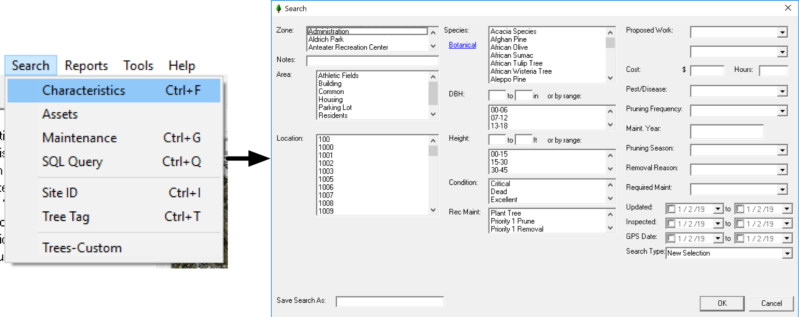

Chapter 5 Applications
Some significant applications are demonstrated in this chapter. Think of it as an ArborPro cookbook with recipes for completing tasks.
5.1 Identify Hazardous Trees
Locating hazardous trees is a common use case for many ArborPro users. Identifying trees of any criteria (hazard or not) is itself and important and powerful tool. Querying your inventory requires the search tool and a solid understanding of the search tool is necessary to prioritize your work efficiently. To begin searching either use the hotkey Ctrl + F or follow these steps:
- Select Search in the top left-ish menu bar.
- From the Search drop down menu, select Characteristics.
Having followed those steps, you should see a search window:

From this point, you can find all hazardous trees selecting all trees with a Target Rating of Hazard:

And that’s pretty much it. The search tool is very intuitive and more complex searches can be made with ease. You can get creative with your searches and add multiple characteristics to a single search. Some other common searches are:
- Search for a specific species
- Search for all trees within a DBH range
- Search by condition
- Search by update/inspected/gps date
- Search by recommended maintenance
- Search by condition in a specific zone
Finally, it’s important to understand that the search tool is only as good as the data collected. This is similar to the Garbage In, Garbage Out concept where poorly collected data will make searching difficult. Conversly, properly collected data will provide better search results. For more on the importance of data collection, see chapter 6.
5.2 Build a Custom Report
Out of the box, ArborPro provides numerous reports that are ready to be used. However, there may be times were you need a custom report with a specific set of fields. You may even need the sorting of those fields to behave in a specific way.